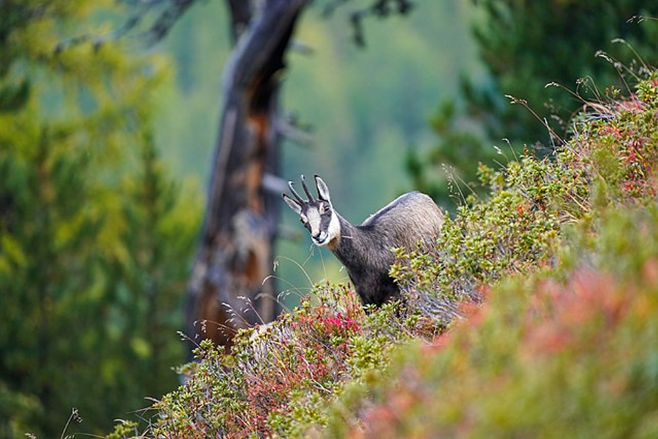
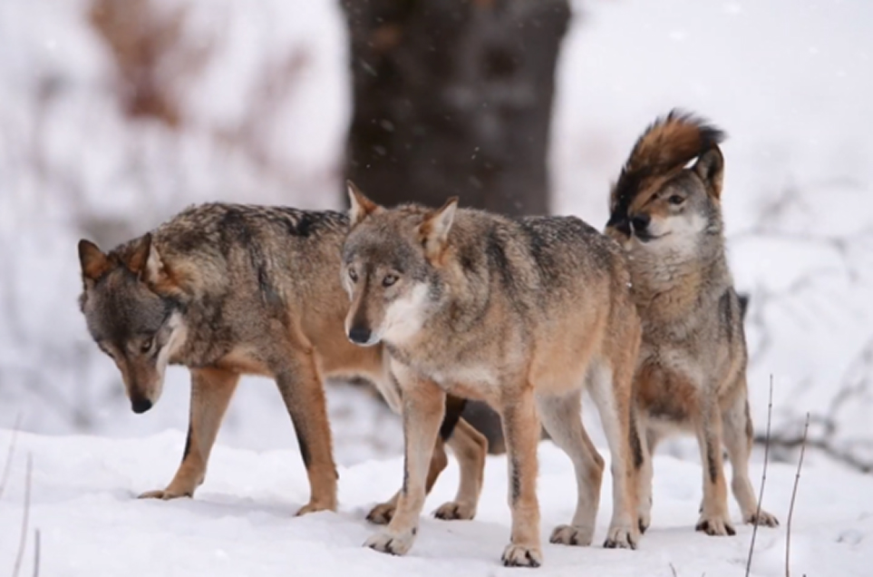

Il Parco Nazionale del Gran Paradiso
ospita una straordinaria varietà di fauna arpina. Simbolo del parco è lo stambecco, salvato dall'estinzione e oggi facilmente avvistabile. Accanto a lui, la marmotta, con i suoi fischi inconfondibili, popola i prati alpini. Nei cieli, l'aquila reale regna sovrana, offrendo spettacolari voli tra le cime. La flora è altrettanto ricca, con praterie punteggiate da genziane, stelle alpine e rododendri. Gli ambienti variano dai boschi di larici e abeti alle aree glaciali, creando un habitat ideale per questa biodiversità unica.

Stelle alpine e farfalle rare delle Dolomiti Bellunesi
Le Dolomiti Bellunesi sono un paradiso di biodiversità. Tra i prati alpini fiorisce la stella alpina, simbolo delle montagne, accompagnata da genziane e gigli. Il camoscio alpino è un abitante caratteristico delle alte quote, mentre nei boschi si possono avvistare cervi e caprioli. Tra gli insetti, spiccano le farfalle rare, che trovano rifugio nei microambienti del parco. Le foreste di faggi e abeti rossi, insieme ai pendii rocciosi, creano un A ecosistema unico, ideale per la sopravvivenza di molte specie endemiche delle Dolomiti.
Il pino loricato e il lupo appenninico del Pollino
Il Parco Nazionale del Pollino è noto per il suo simbolo botanico, il pino loricato, che si erge maestoso sulle rocce calcaree. Questa specie rara, con la sua corteccia a scaglie, è un monumento vivente. Tra gli animali, spicca il lupo appenninico, che si aggira silenzioso tra i boschi, e il cervo, visibile nelle radure. Le praterie ospitano orchidee selvatiche, che colorano il paesaggio con tonalità vivaci. Questa varietà di flora e fauna riflette la straordinaria biodiversità di uno dei parchi più selvaggi d'Italia.
